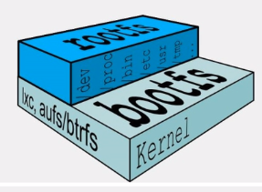
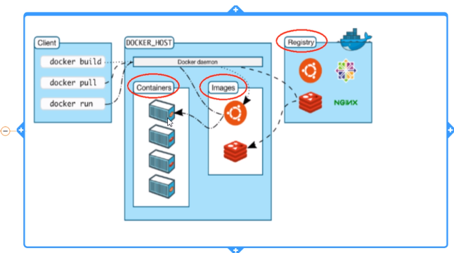
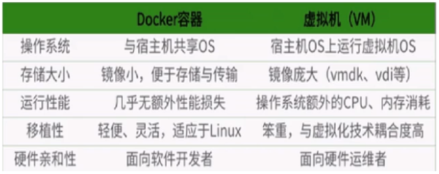

一次封装，到处运行
LXC linux containers
docker-daemon
/etc/docker/daemon.json 配置文件
{
"registry-mirrors": ["https://hub-mirror.c.163.com"]
}
service docker restart
镜像、容器、仓库
镜像相当于一个精简linux系统、应用程序、运行环境的文件包,只读的可执行模板，可以创建多个容器，只包括最基本的命令、工具、和程序库，共用宿主机的kernel,只需要提供rootfs可以了。多层结构的联合文件系统的一个整体。

容器相当于实例化了镜像，也是一层级文件系统，最上层可读写权限。一个容器运行一个服务。
仓库，镜像的服务器，每个镜像有不同的标签，也就是版本号。

docker与虚拟化区别
docker比虚拟机更少了抽象层，docker不需要硬件资源虚拟化，容器里的程序直接使用物理机的硬件资源，提高了效率
docker利用宿主机的内核，虚拟机则需要运行自己的内核

docker 容器后台运行，必须要有一个前台进程，如果不是一直挂着的命令 top.tail 等，会自动退出，所以必须前台运行程序
unionFS 联合文件系统：分层，轻量级，高性能文件系统组成。
boofs :包括bootloader 和kernel,docker最底层就是bootfs,用来启动kernel,将控制权交给内核后，系统卸载bootfs.
rootfs,在bootfs上，就是个典型的linux目录和文件。
docker version
docker info
docker help
docker images 本地镜像
docker images -a
docker images -q imagesID
docker images --digests 显示镜像的摘要信息
docker images --no-trunc 显示完整信息 不省略
docker search
-s 30 超过30的点赞数的镜像
--no-trunc 显示完整信息
--automated 只列出automated build类型镜像
docker pull images:tag
docker rmi images:tag 删除镜像-f 强制
docker run images 实例化镜像生成容器
--name 命名
-d 后台启动
-v 添加本地目录映射到容器目录 可以一对多映射
-i 交互式
-t 开启伪终端
-P 随机端口
-p 指定端口：物理机的7788：容器的8888
ip:物理机短裤:容器端口
ip:容器端口
物理端口：容器端口
容器端口
docker run -it --name cc centos
docker ps 查看运行状态的容器
-a 所有的容器
-l 上次的容器
-ｎ 3 上３次的容器 （除删除操作的）
-ｑ 静默模式 只显示ＩＤ
--no-trunc 全显示信息
exit 关闭并退出
ctrl +p+q 正常退出
docker attach 容器ID 进入运行中的容器，恢复容器终端
docker exec -t 容器id 命令 不进入容器执行命令
docker start 容器ID 启动容器
docker restart 容器ID 重启
docker stop 容器id
docker kill 容器id
docker rm 容器id 删除容器 -f
docker rm -f `docker ps -aq` 删除全部容器
docker ps -aq |xargs docker rm -f 删除全部容器
docker logs -f -t --tail 5 容器ID 查看容器5条日志
docker top 容器id 看容器top
docker inspect 容器id 看容器内部配置细节
docker cp 容器id:/dir/filename 宿主机dir 从容器里拷贝资料出来
docker commit -m="备注信息" -a="作者" 容器id 组名/新镜像名：tag 生成新镜像
docker commit -m="test" -a="phonit" 容器ID phonit/centos:1.2
commit 与build 的区别
添加数据卷的方式有两种，第一种是直接通过命令行挂载，第二种是通过dockerFile添加
命令行挂载
docker exec -it 容器id /bin/bash 打开容器
docker run -it -v /宿主机绝对目录:/容器内目录:rw -v /宿主机绝对目录2:/容器内目录2:rw 镜像名 添加共享目录
docker run -it -v /host_data:/container_data:rw tomcat /bin/bash
docker exec -t 容器ID ls /container_data 查看容器目录
dockerFile添加
vi filename
FROM 镜像名
VOLUME ["/dir","/dir"] --privileged=true 实时更新的共享目录，只要有一个容器主机数据改动，其他数据都实时更新
CMD echo "mkdir ok"
CMD /bin/bash
docker build -f filename -t test/centos:1.0 . 生成新镜像, .是当前配置文件的路径
docker run -it --name 01 test/centos 生成第一台容器
docker run -it --name 02--volumes-from 01 test/centos 生成第二台容器